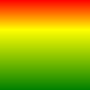

Gradient QML Type
Defines a gradient fill. More...
| Import Statement: | import QtQuick |
| Inherited By: |
Properties
- orientation : enumeration
- stops : list<GradientStop>
Detailed Description
A gradient is defined by two or more colors, which will be blended seamlessly.
The colors are specified as a set of GradientStop child items, each of which defines a position on the gradient from 0.0 to 1.0 and a color. The position of each GradientStop is defined by setting its position property; its color is defined using its color property.
A gradient without any gradient stops is rendered as a solid white fill.
Note that this item is not a visual representation of a gradient. To display a gradient, use a visual item (like Rectangle) which supports the use of gradients.
Example Usage

The following example declares a Rectangle item with a gradient starting with red, blending to yellow at one third of the height of the rectangle, and ending with green:
Rectangle { width: 100; height: 100 gradient: Gradient { GradientStop { position: 0.0; color: "red" } GradientStop { position: 0.33; color: "yellow" } GradientStop { position: 1.0; color: "green" } } }
Performance and Limitations
Calculating gradients can be computationally expensive compared to the use of solid color fills or images. Consider using gradients for static items in a user interface.
Since Qt 5.12, vertical and horizontal linear gradients can be applied to items. If you need to apply angled gradients, a combination of rotation and clipping can be applied to the relevant items. Alternatively, consider using QtQuick.Shapes::LinearGradient or QtGraphicalEffects::LinearGradient. These approaches can all introduce additional performance requirements for your application.
The use of animations involving gradient stops may not give the desired result. An alternative way to animate gradients is to use pre-generated images or SVG drawings containing gradients.
See also GradientStop.
Property Documentation
orientation : enumeration |
Set this property to define the direction of the gradient.
| Constant | Description |
|---|---|
Gradient.Vertical | a vertical gradient |
Gradient.Horizontal | a horizontal gradient |
The default is Gradient.Vertical.
stops : list<GradientStop> |
This property holds the gradient stops describing the gradient.
By default, this property contains an empty list.
To set the gradient stops, define them as children of the Gradient.